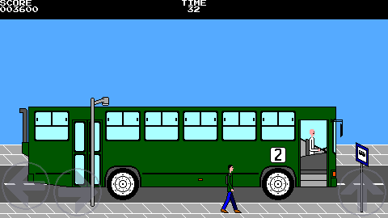
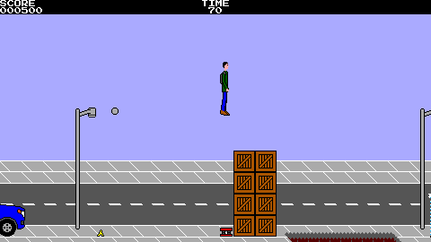

 
Alex vs Bus: The Race is a free and open source platform runner game in which Alex is just a man who depends on public transportation in a developing country and needs to run in order to catch the bus, or else he will have to wait an eternity for the next bus to come.
Key features include:
The repository can be found at https://github.com/M374LX/alexvsbus.
The game can be controlled by using a keyboard, gamepad, or touchscreen buttons (Android only).
When using a keyboard, the ingame controls are:
| Left/Right arrows A/D |
Move character |
|---|---|
| Ctrl Spacebar Up arrow W |
Jump |
| Escape | Pause |
| F9 | Toggle audio |
When using a keyboard, the controls during menus are:
| Arrow keys W/A/S/D |
Select item |
|---|---|
| Ctrl Spacebar Enter (aka Return) |
Confirm selection |
| Escape | Close current menu |
| F9 | Toggle audio |
On French (AZERTY) keyboards, W becomes Z and A becomes Q.
Touchscreen functionality is currently not supported on desktop platforms, but can be simulated by using the mouse if the command-line option --touch is used.
On a touchscreen, menu items can be selected by touching them.
The main menu is displayed when the game is launched and contains the following items:
| Play | To start the game after selecting a difficulty and then a level. |
|---|---|
| Jukebox | To listen to the game's music. |
| Settings | To change the game's settings, which are detailed in the section "Settings" of this manual. |
| About | To view some information about the game, including the copyright notice, release, repository URL, licenses, and credits. |
| Quit | To end the game after a confirmation prompt. |
| Audio on/off | A shortcut to disable the audio entirely. |
To start playing the game from the main menu:
The game can be described as a "platform runner" (not an endless runner). In each level, the player has 90 seconds to catch the bus while jumping over holes, banana peels, crates, and other obstacles.
For extra score, you can optionally collect the coins found in the levels. Collecting a silver coin adds 50 to your score, while collecting a gold coin adds 100 to it.
When reaching the bus, 10 is added to your score for each remaining second before the next level starts. If you run out of time before reaching the bus, however, it will depart without Alex in it and you will be offered the option to try again. By selecting the check mark (), the current level is restarted, but your score is cleared to zero.
Some of the crates on the way can be pushed to reveal a secret passageway. If pushing a crate is required in order to progress, an arrow with the word "push" is shown, but most of the passageways are optional and no arrow is shown. Finding all of them is up to you.
You can access the game's settings from either the main or the pause menu.
The settings menu contains the following items:
| Display settings | To open the display settings menu. |
|---|---|
| Audio settings | To open the audio settings menu. |
| Touchscreen buttons on/off (only if touchscreen functionality is enabled) |
To show or hide the touchscreen buttons during the game. You might want to hide the buttons if using a physical gamepad on a phone, for example. |
The display settings menu contains the following items:
| Fullscreen on/off (desktop only) |
To select between running the game in fullscreen or windowed mode. |
|---|---|
| Window scale (desktop only) |
To select the size of the window when running the game in windowed mode, which can be one, two, or three times the size of the game's virtual screen (vscreen). |
| Vscreen size | To customize the size of the game's virtual screen (vscreen). More details can be found in the section "Virtual Screen (Vscreen)" of this manual. |
| Scanlines on/off | To enable or disable a scanlines visual effect, which simulates the visible scanlines of an old CRT television set. The scanlines will appear only if the physical screen or window is at least twice the size of the game's virtual screen (vscreen). |
In order to look more like a game from the 8-bit (or even 16-bit) era, the game uses a virtual screen (also referred to as "vscreen") ranging from 256 to 480 pixels in width and from 192 to 270 pixels in height, which is scaled to fill larger physical screens.
The size of the vscreen can be customized by selecting "Vscreen size" on the settings menu.
The vscreen sizing mode can be set to "auto" or "manual". When set to "auto", the size that best fits in the physical screen is determined automatically. If set to "manual", however, the size can be set manually.
A vscreen size of 480x270 will be scaled perfectly on a modern 1920x1080 monitor, while a smaller vscreen size can be used to simulate an old console's screen size (and make the game more challenging), like 256x192 for the Sega Master System or 320x224 for the Sega Genesis/Mega Drive. Similarly, a vscreen size of 320x256 will be scaled perfectly on a 1280x1024 monitor.
The audio settings menu contains the following items:
| Audio on/off | If set to "off", the audio is disabled entirely. This is the same as disabling the audio from the main or pause menu. |
|---|---|
| Music on/off | To enable or disable music. |
| SFX on/off | To enable or disable sound effects (SFX). |
The game can be paused by pressing Escape or, if using a touchscreen, by tapping the pause button (), found at the top-right corner of the screen.
When pausing the game, a menu with the following items appears:
| Resume | To unpause the game and continue playing. |
|---|---|
| Try again | To restart the current level after a confirmation prompt. By restarting the level, your score is cleared to zero. |
| Settings | To change the game's settings, which are detailed in the section "Settings" of this manual. |
| Quit | To quit the game and return to the main menu after a confirmation prompt. |
| Audio on/off | A shortcut to disable the audio entirely. |
The table below gives the default location of the config file, in which the game progress and settings are saved, for each platform:
| Android | Internal storage |
|---|---|
| Windows | C:\Users\<username>\AppData\Roaming\alexvsbus\alexvsbus.cfg |
| macOS | /Users/<username>/Library/Preferences/alexvsbus/alexvsbus.cfg |
| Linux and others | /home/<username>/.config/alexvsbus/alexvsbus.cfg |
On Linux and other operating systems, the XDG Base Directory Specification is implemented, which means that the directory prefix can be changed by setting the XDG_CONFIG_HOME environment variable.
On desktop platforms, a non-default location for the config file can be set by using the --config command-line option.
On desktop platforms, the following command-line options can be used:
| -h, --help | Show usage information and exit. |
|---|---|
| -v, --version | Show version and license information and exit. |
| -c, --config <file> | Set the config file to use. |
| -f, --fullscreen | Run in fullscreen mode. |
| -w, --windowed | Run in windowed mode. |
| --assets-dir <directory> | Set assets directory to use. |
| --window-scale <scale> | Set window scale (1 to 3). |
| --vscreen-size <size> | Set the size of the game's virtual screen (vscreen), which can be either auto or a width and a height separated by an "x" (example: 480x270). The supported values for the width are 480, 432, 416, 320, and 256, while the supported values for the height are 270, 256, 240, 224, and 192. |
| --fixed-window-mode | Remove the ability to toggle between fullscreen and windowed mode and to change the window scale, as if the game were running on a mobile device. |
| --scanlines-on | Enable scanlines visual effect. |
| --scanlines-off | Disable scanlines visual effect. |
| --audio-on | Enable audio output. |
| --audio-off | Disable audio output. |
| --music-on | Enable music. |
| --music-off | Disable music. |
| --sfx-on | Enable sound effects. |
| --sfx-off | Disable sound effects. |
| --touch | Enable the use of the mouse to simulate a touchscreen. |
| --touch-buttons-on | Enable left, right, and jump buttons on touchscreen (visible only if --touch is also used). |
| --touch-buttons-off | Disable left, right, and jump buttons on touchscreen (visible only if --touch is also used). |
| --mobile | As a shorthand for --fixed-window-mode and --touch, cause the game to act as if it were running on a mobile device. |
Game design, programming, music, sound effects, and graphics by Alexandre Almeida, aka M374LX (https://m374lx.users.sourceforge.net, wilsalx<at>gmail<dot>com).
Additional game design by Hoton Bastos.
Testing by Harim Pires.
The logo font is Telegrama, by YoWorks (https://www.yoworks.com).
The character set font is Press Start 2P, by codeman38 (https://www.zone38.net).
Alex vs Bus: The Race
© 2021-2025 M374LX
The code as a whole is under GNU GPLv3 (https://www.gnu.org/licenses/gpl-3.0.en.html), with third-party libraries in other free licenses. For details, see the respective source files.
The assets, including graphics, music, sound effects, and level definitions, are under Creative Commons Attribution-ShareAlike (CC BY-SA) 4.0 (https://creativecommons.org/licenses/by-sa/4.0).